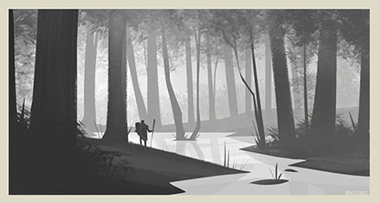
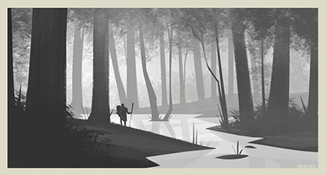
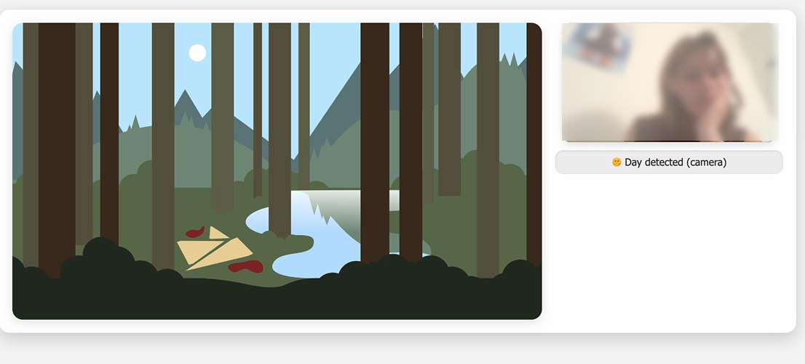

Signals in the Dark
A motion-driven interactive cryptid hunt
🔦 Move your mouse to shine the flashlight, then click on Nessie or Bigfoot when you spot them
Overview
An interactive motion project built in Rive where users explore a forest and discover cryptids with motion-based feedback. This project was meant to explore motion feedback and interactive animation using Rive and Vibe-Coding, experimenting with dynamic inputs and environmental triggers while being inspired by cryptid lore and playful discovery.
Goals
- Motion Feedback: communicate interactions clearly
- Dynamic Inputs: playful discovery through environmental triggers
- Interactive Animation: immersive experiences with Rive & Vibe-coding
Design Process
Visual Style
The visual direction uses a monochromatic, desaturated noir-inspired vector style, reinforcing the sense of mystery and atmosphere while keeping the interface cohesive and focused.
 

The environment was illustrated as a fairly simple vector form along with simplistic cryptid vectors that can be discoverable within the environment while still maintaining visual cohesion.


I designed a daytime variation of the environment to allow for a alternative way to interact with the scene by swapping between day and night which can enhance the storytelling.
Rive
I used Rive to create motion-driven interactivity, giving each cryptid responsive animations that guide discovery and keep the experience playful. Rive enabled smooth transitions and interactive triggers that made the world feel alive.
I added “hide” animations for Bigfoot and Nessie that trigger when users click on them. Each creature has two timelines: idle and hiding, allowing smooth motion between states. I also implemented a Time input, so the scene transitions between day and night based on the value, creating a dynamic and responsive environment.


Each cryptid’s hide animation uses two timelines (idle + hiding) and integrates with a global Time input for environmental responsiveness.
Vibe-Coding & Experimental Interaction
In this phase, I worked iteratively with AI. Learning that effective prompting needs percice and small adjustments to lead toward more complex interactive results.
Vibe-Coding allowed me to experiment with unconventional inputs, like lighting-based day/night changes, letting user actions dynamically influence cryptid behavior and push the boundaries of interactive discovery.
 View PrototypeReflection
Motion is essential for feedback and understanding interactions, even in an illustrative style. In future iterations, I'd provide clearer cues for user discovery while keeping exploration playful.